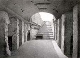

Department
of Ancient Near East >
research
> excavations > Sidon,
Lebanon
|

View of Sidon published by Renan |
Sidon was an important Phoenician harbour and one of the major sites in the ancient world. It is situated about 20km south of Beirut. During the 19th and early 20th century an important cemetery with stone coffins and a temple dedicated to the god Eshmun were found on the outskirts of Sidon, but relatively little was known about the city centre. In the 1960s three substantial sites were acquired by the Lebanese Directorate General of Antiquities. Excavations at one of these, the 'College Site', sponsored by the British Museum and directed by Claude Doumet-Serhal, began in 1998. This is a joint project with the Lebanese Department of Antiquities. The Early Bronze Age is represented by a series of mud-brick walls associated with plaster floors and various installations, and the finds include pottery and fifteen cylinder seal impressions. In the most recent season (2001), nineteen graves of the Middle Bronze Age (c.2000-1500 BC) have been discovered containing skeletons and a rich collection of grave-goods. Some of the bodies were laid in graves lined with stones, while other bodies, probably of babies or small children, were placed in large jars. Most of the bodies were accompanies by a collection of pottery vessels, sometimes with the addition of bronze weapons and tools. These have included axes and spearheads. In three of the graves were Egyptian scarabs, which will help the graves to be accurately dated. Nearly all the graves were cut into a layer of sand up to 1.25m thick that covered the remains of the Early Bronze Age (c.3500-2000 BC). This sand was deliberately brought to the site by the early inhabitants of Sidon, perhaps for religious reasons. In another area, large quantities of Mycenaean and Iron Age pottery have been discovered. |